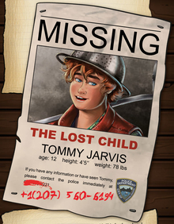

40 - Au commencement -
L'enquête que nous baptiserons plus tard "Énigme de la Marionnettiste Diabolique" commença par accident lors d'une après-midi pluvieuse. Mike était arrivé, tenant à la main l'avis de recherche d'un gamin que nous connaissions tous et qui avait disparu sans laisser de trace depuis quelques semaines : il s'agissait de Tommy Jarvis qui venait juste de fêter ses 12 ans. "Les gars", dit Mike, "c'est une affaire pour Pizza & Investigation !" Tandis que Mike enlevait sa veste détrempée, je pris l'affiche et la regardai attentivement.

Ray, qui était resté silencieux jusque-là, dit : "Tu n'y penses pas... C'est surtout un travail pour la police." Mike s'assit dans un fauteuil, essuyant la pluie de son visage et répondit : "Rien ne nous empêche d'essayer."
"Oui mais pas sans soumettre ça au vote. Attendons les autres avant de décider", répondis-je alors que la porte du camping-car s'ouvrit de nouveau. C'était Leila. "Salut ! Quel sale temps... Qu'est-ce que vous faites les gars ? Un nouveau mystère ?"
"Mais oui ! Combien tu en veux ?", annonca Ray ironiquement. "Je peux encore enlever le chat de Mme Smith puis prétendre l'avoir retrouvé."
"C'est bon Ray, laisse tomber", répondis-je, "on sait tous que ce n'était pas très noble, mais on en avait besoin pour acheter le Talkie-walkie."
"Oui... Mais finalement, on a tout dépensé pour acheter des pizzas et on a juste récupéré le Talkie-walkie dans le grenier de Grand-père parce qu'il avait oublié de le fermer à clé."
Avec un air amusé, Leila récupéra l'appareil sur la table et vint s'asseoir. Soudain, une silhouette encapuchonnée entra ! Mike bondit de sa chaise, Ray manqua de s'étouffer et Leila lâcha presque le Talkie-walkie. Il ne s'agissait pourtant que de Daphné. En relevant sa capuche, elle ne put s'empêcher de nous adresser un "Je vous ai fait peur ?" narquois. "Ok, maintenant qu'on est tous là, on peut discuter et voter", annonçais-je.
"Voter pour quoi ?", demanda Daphné.
"Il faut retrouver Tommy. Encore. C'est de notre faute s'il a disparu après tout."